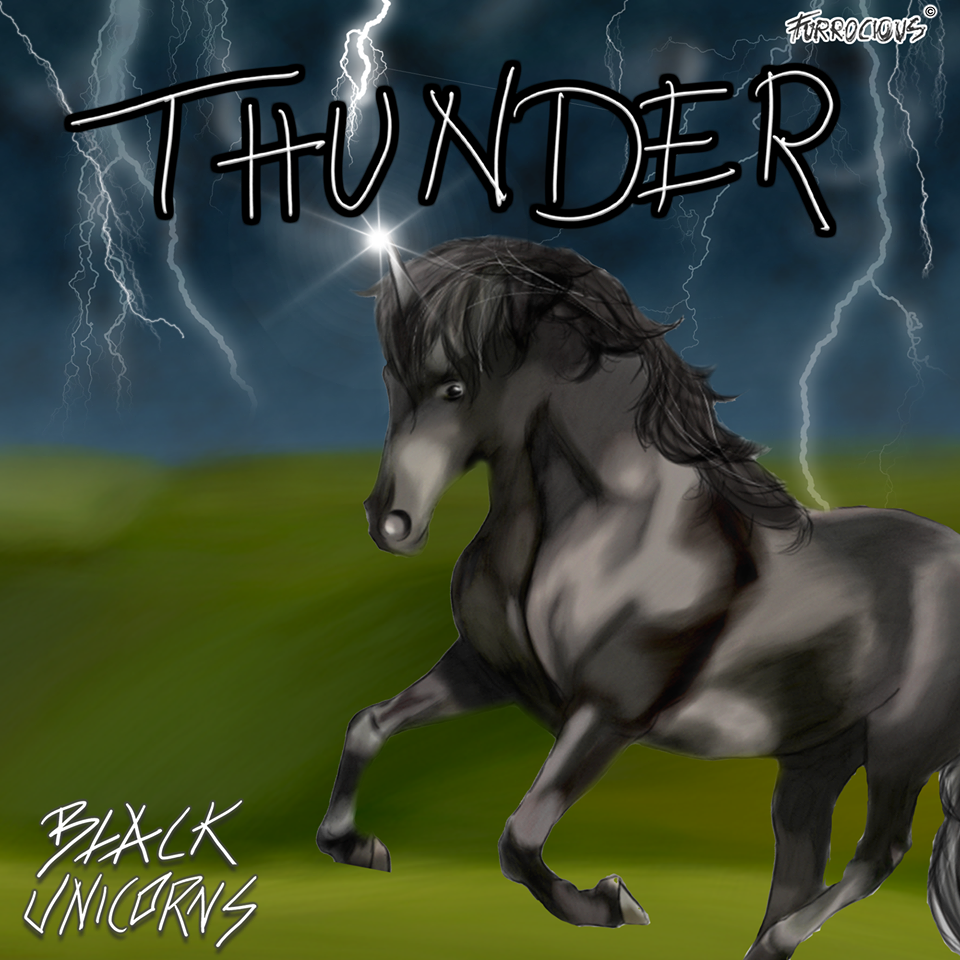
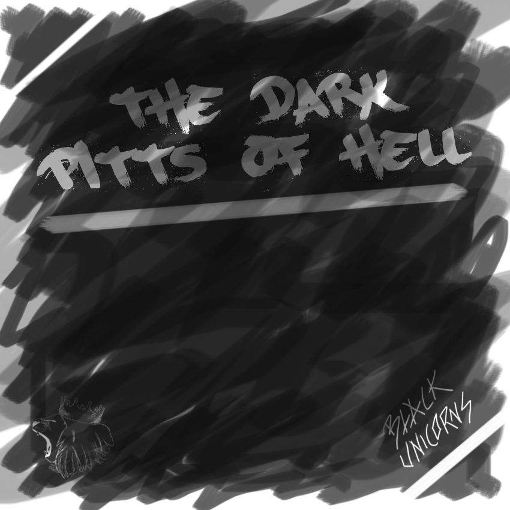
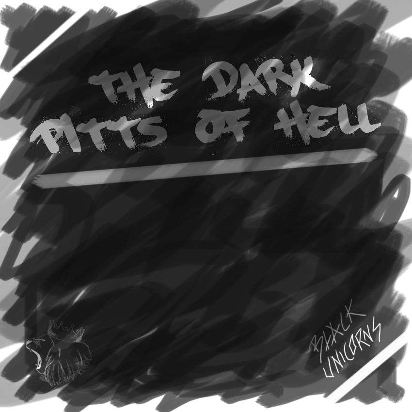

Black Unicorns
Even though the brand looks and sounds very cute, the band members are more on the rough side.
Over
""Black Unicorns is een Hairmetal band dat zich vooral bezighoudt met de hedendaagse metal/rock muziek. De band bestaat uit vier verschillende mannen die zich vooral met een schattige uitstraling van Black Unicorns met de bijbehorende schattige teksten en liednamen bezighoudt. De bandleden zijn jong in hun jarig dertig en zijn deel van de platenmaatschappij Furrocious Records. Nochtans hun liederen en naamgevingen er aaibaar uitzien, zijn de bandleden nogal aan de ruige kant, en geeft dit een paradox effect voor de band, waardoor deze wel meer aanzien heeft. Deze schijnbare tegenstelling maakt dat Black Unicorns wel groot succes zal hebben.""

Albums
 
